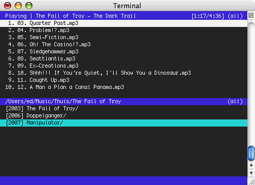
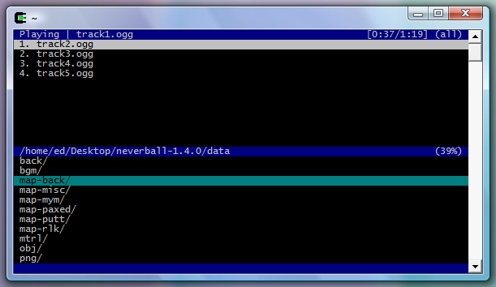

Herrie is a minimalistic music player that uses the command line. It is written to support a variety of operating systems, audio subsystems and file formats, including playlists.
Herrie has a split-screen user interface, with a playlist at the top of the screen and a file browser at the bottom. When tracks are added to the playlist, Herrie consumes them from the top one by one. It is thus an application that allows you to batch music for playback.
Herrie also has some more exotic features, including support for AudioScrobbler and the ability to chroot() itself into a directory.
On the November 29, 2007, Herrie was awarded a 3rd price at at Trophées du Libre in the category Multimedia & Games! Slides of the presentation that has been held in front of the jury have been published online.
Screenshots
Below are a couple of screenshots of the application in action.
Herrie on FreeBSD, playing a CD from Deftones.
Herrie on Mac OS X, playing a CD from The Fall of Troy.
Herrie through Cygwin on Windows Vista, playing the background music from NeverBall.
Obtaining Herrie
Source tarballs
Herrie 1.9.1 is available for download at one of the three following locations:
Below are the checksums for the tarball:
MD5 (herrie-1.9.1.tar.bz2) = 1c767855fe6dd74b1ebafe74935e9945 SHA256 (herrie-1.9.1.tar.bz2) = 1ad52bd3f6beeb40792a2f5b43c87d07cd8e1645bd798f16e728c439dc2aac38 SIZE (herrie-1.9.1.tar.bz2) = 65212 MD5 (herrie-1.9.1.tar.gz) = 8c88cc7569765c8747b94675c57d0fb3 SHA256 (herrie-1.9.1.tar.gz) = 84162de33ae3cd1b617b62e473e735686630ad856cfb6a307db8518ff32a93ea SIZE (herrie-1.9.1.tar.gz) = 77313
A tarball with the latest snapshot is also available. It is automatically generated from the repository. This tarball should be used to test the upcoming release of Herrie.
A history of changes between releases can be found in the ChangeLog.
Package managers
The following operating systems or distributions include Herrie in their package manager:
- ALT Linux
- Arch Linux
- Debian
- FreeBSD
- Gentoo Linux
- MacPorts
- NetBSD
- OpenBSD
- openSUSE
- Pardus Linux
- PLD Linux Distribution
- Slackware
Anonymous repository access
Herrie's latest sourcecode can be downloaded using Git. The following command downloads the latest sourcecode:
git clone git://g-rave.nl/herrie
It is also possible to take a look at the sourcecode using Gitweb. Commits can also be tracked at Ohloh.
Using Herrie
After installation, a new manual page is available. Just run man herrie for a list of configuration switches and keyboard bindings. An online manual page is also available.
Developers can take a look at the source code documentation generated by Doxygen.
Contacting developers and users
Mailing List
Herrie has a mailing list used for questions, feedback and sending in patches; <users@herrie.info>. Subscribing is possible with the Mailman interface. The archives of this list can also be read at Gmane and The Mail Archive.
Please send plain-text messages only. We also prefer messages signed with PGP.
Internet Relay Chat
The channel #herrie on irc.il.fontys.nl is used for general discussion about usage and development. Please keep as much of the conversation in the channel itself. The channel has a CIA bot as well, making it ideal for tracking the project in real-time.